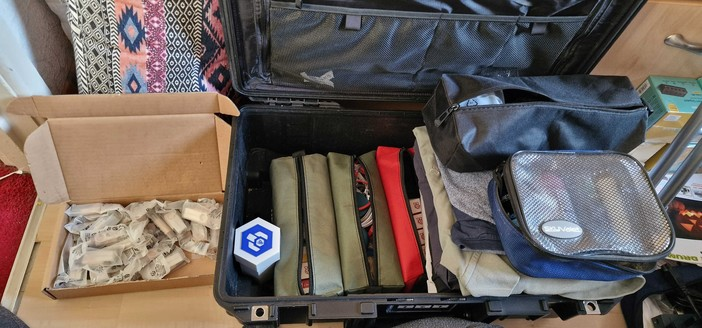
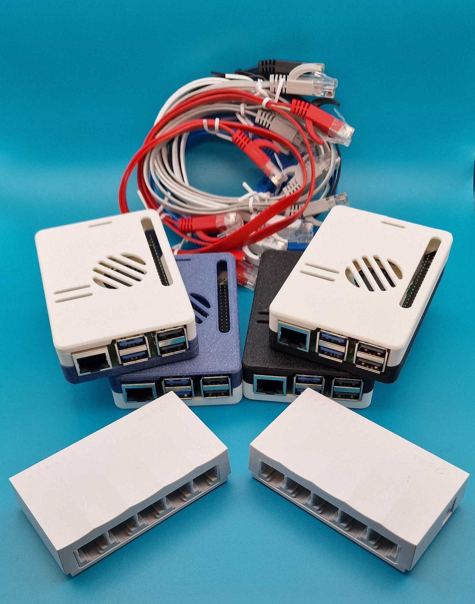

CarpentriesOffline at CCHB24
I was fortunate enough to get my request for funding, to attend CarpentryConnect Heidelberg, submitted and approved just before the major clamp down on expenses at my university. Just as well as I had two sessions, a workshop and a mini hackerthon, accepted. My next bit of fortune came when the Software Sustainability Institue approved funding, from the Further Development Fund, to purchase more Raspberry Pis (and some peripherals) which could use for the workshop as well as further development of the miniHPC which is part of SSI Fellowhip project.
I boarded the plane with probably enough computing power to send a rover to Mars, let alone a flight to Germany from England. From the beginning, of my planning, I did not want to have the hardware put in the hold luggage because if the airline decided to loose my luggage I’d end up not being able to run the workshop. I bought a really fancy protective case but as I got closer to the departure date I realised that the case itself is very heavy and there was no way I was going to get everything I needed into the hand luggage with the case’s extra weight. I also decided that I didn’t want to check any other luggage in since that would mean lugging several items between trains, planes and automobiles on the several legs between Durham, UK, and Heidelberg, Germany. I was pretty impressed with myself when I managed to pack 10+ Raspberry Pis, five mini network switches, 3 Anker charging station, loads of ethernet cables, USB cables, USB to Ethernet connectors and whot not, AND all my clothes in a carry-on case and a backpack. There was one thing I couldn’t take along as I was worried it would break and that was a little monitor. And then there was one thing that I, somehow, forgot and that was and HDMI to micro HDMI cable.

Apart from having had to run, from what felt like the west to the east of the Netherlands, through Amsterdam airport because my first flight was late and then to freeze at the station in Frankfurt because the train was delayed, the trip went really well. I managed to, successfully, lug all 17kg of the allowed 12kg of hand luggage all the way to Germany and back with no complaints, extra charges or dislocated shoulders.
The conference itself was really good and I thoroughly enjoyed myself. I could only attend the keynotes and poster session because, obviously, I had my sessions to deliver at the other times. The keynote speakers were Radhika Khetani, Yanina Bellini Saibene and Malvika Sharan. It was such a privilege to hear them speak in person.
The mini hackathon was on the last day. There were only four of us but I think we managed to get a few things done. Redesigning the CarpentriesOffline website has been on my list for a long time and although we didn’t get much done I did come away from the session with some solid ideas and a good deal of motivation for the redesign.
My plan for the workshop was as follows. I set a limit of 10 people for the workshop because I have 10 Raspberry Pi 5s. I also have 5 mini USB switches When I realised that the power supplies I ordered for the RPis would not work in Germany, returned them and bought some Anker USB power banks. Each power bank could supply up to 200W distributed between its six ports (2 USBC and 4 USB A). I have a RPi 4 which runs RaspAP and could act as an access point. If RaspAp won’t connect to Eduroam there is the option to tethering from a mobile phone connected to either Eduroam or data (if all else fails). Attendees were asked to bring laptops and I had a few USB to ethernet converters for those new laptops that do not have Etherports.

I pre-prepared 10 SD cards, five for login nodes and five for compute nodes. Attendees had to work in pairs, using two RPi 5s which they had to connect to a mini switch. One loaded with the login node SD card and the other with the compute node SD card. One laptop also had to be connected to the switch as this would be the only way to connect to the RPis if, for some reason, they won’t connect to the RaspAP.

I would say that things went according to plan up to this point. But, the moment we switched the RPis on it all went to pot! Some of the RPis wouldn’t boot. I discovered beforehand that sometime the RPis need their EPROMS flashed and I had an SD card at hand for that. Despite that some still wouldn’t boot. Then it seemed that some of the SD cards might have a problem, so we went through the steps of installing the Raspberry Pi Imager and writing pre-prepared node images to the cards. Still some would not boot, so we suspected that my node images might be faulty so we wrote the RPi Os Lite to the SD cards and attendees started following my lesson notes to install the software manually. Still some RPis would boot and still some SD cards wouldn’t work. Some of the RPis would not connect to the RaspAP access point and without a monitor and a keyboard we were stuck.
One of the attendees managed to get the login and compute node to work. My hope was that it could be done without access to the Internet but at this point we realised that, because the nodes were set up to use EESSI, they still needed Internet access.
My worry was that attendees would have been disappointed with the session but they all said that it was good fun to get their hands on the RPis and to be able to work through the process of trying to get everything up and running.
We did learn several lessons with regards to what works and what can go wrong and all this experience will be documented (eventually) on the CarpentriesOffline website. I am still looking for a server where I can make the RPi OS images available for anyone to download. They are to large for GitHub, unless one zips and splits the files which I don’t really want to do. In the meantime, do keep an eye on the website as I have been updating it over the last couple of months.
As always, I would welcome and help and/or suggestions with our CarpentriesOffline projects. Do get in touch if you are interested. You should be able to track me down on the Carpentries and RSE Slack workspaces and I also lurk around on Mastodon, BlueSky and LinkedIn.
Back to top